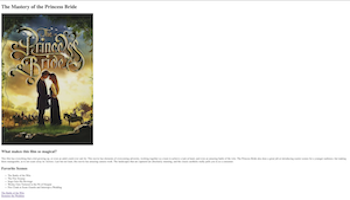
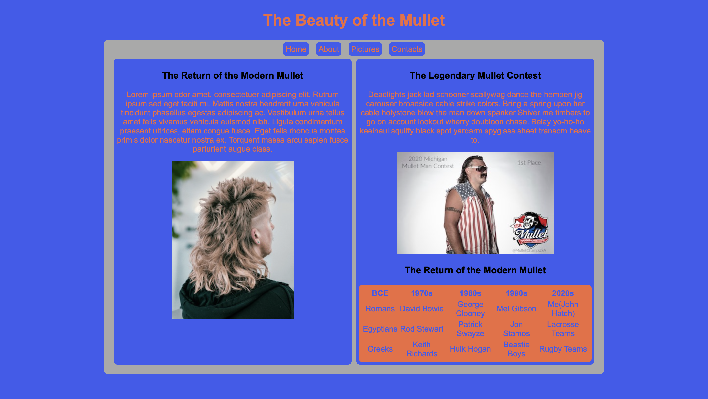
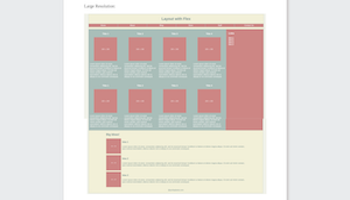
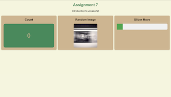
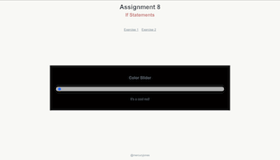
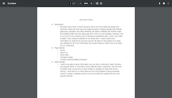
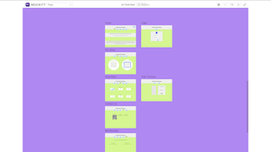
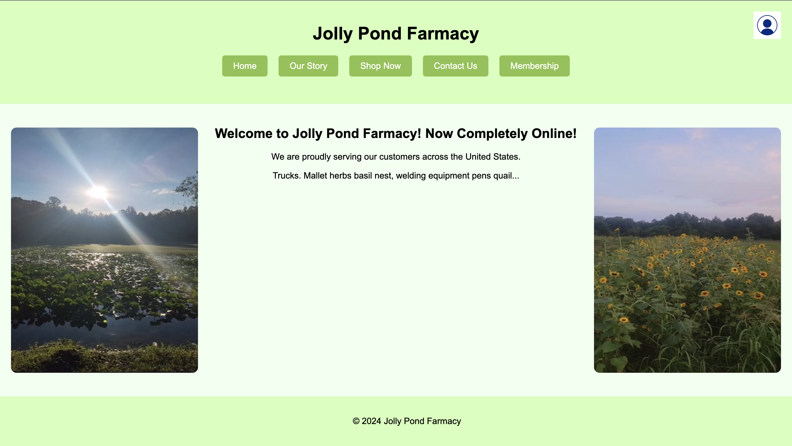

CSCE 242: Web Applications
Created By: John Hatch
This course provides students with the ability to code and design web pages given certain parameters.
This course provides students with the ability to code and design web pages given certain parameters.

This first assignment focuses on teaching the basics of html. We worked on having a working link to a live website, a title, proper indentation such as the head and body. Finally, we uploaded photos, links and a table. Even though the page doesn't look pretty, we learned the basics of uploading.

This second assignment focuses on teaching the basics of css. Like the first assignment, we chose a random topic and made a live page with basic html principles. This assignment however, is more focused on css. We used css to format our page. With the CSS implementation, we were able to focus on styling the website to make it a lot nicer for the user to read and it also allowed the artist to show their own creativity.

This first assignment focuses on teaching the basics of html. We worked on having a working link to a live website, a title, proper indentation such as the head and body. Finally, we uploaded photos, links and a table. Even though the page doesn't look pretty, we learned the basics of uploading.

This first assignment focuses on teaching the basics of javascript.

This first assignment focuses on succesfully using conditional Statements inside javascipt. This assignment in particular is focusing on if statements.
This first assignment focuses on succesfully using for loops inside javascipt. This assignment in particular is focusing on for loop statements.

This is the pdf ideas list for my project.

This is the wireframe mockitt makeup for my project.

This is the base HTML and CSS for my project.